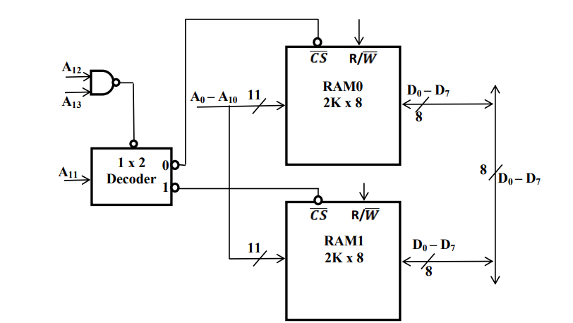

Digital Fundamentals - Detailed Q&A
Comprehensive Answers for 7-Mark Question Themes
7-Mark Question Themes
Detailed explanations for frequently encountered 7-mark question themes. Illustrative frequencies and example paper mentions (S=Summer, W=Winter) are based on analysis of the provided syllabus and past papers.
1. Design a Synchronous counter for a given binary sequence (e.g., 0-1-3-7-6-4-0 or BCD) using T-flip-flops / JK-flip-flops.
(Illustrative Frequency: ~4, Example Papers: S2024 (OR), W2023 (OR), S2021, W2019)
Concept: A synchronous counter is a sequential circuit where all flip-flops are triggered by the same clock pulse simultaneously. Designing such a counter involves several steps: determining the number of flip-flops required, creating a state transition table based on the desired sequence, deriving the excitation inputs for the chosen type of flip-flop (e.g., T or JK) using K-maps, and finally drawing the logic circuit diagram.
Example Design: Design a synchronous counter for the sequence 0 → 1 → 3 → 7 → 6 → 4 → 0 ... using JK flip-flops.
Step 1: Determine the number of flip-flops.
The highest state in the sequence is 7, which is (111)2 in binary. This requires 3 bits to represent all states in the sequence. Therefore, we need 3 flip-flops. Let's label their outputs as QC, QB, and QA, where QC is the Most Significant Bit (MSB).
Step 2: Create the State Transition Table.
This table shows the present state of the counter, the desired next state according to the sequence, and the required J and K inputs for each flip-flop to achieve that transition. Unused states (in this case, 2 (010) and 5 (101)) are treated as "don't cares" (X), which can be used to simplify the logic.
| Present State (QCQBQA) | Decimal Equiv. | Next State (QC(next)QB(next)QA(next)) | Decimal Equiv. | FFC Inputs | FFB Inputs | FFA Inputs | |||
|---|---|---|---|---|---|---|---|---|---|
| JC | KC | JB | KB | JA | KA | ||||
| 000 | 0 | 001 | 1 | 0 | X | 0 | X | 1 | X |
| 001 | 1 | 011 | 3 | 0 | X | 1 | X | X | 0 |
| 010 | 2 | XXX | - | X | X | X | X | X | X |
| 011 | 3 | 111 | 7 | 1 | X | X | 0 | X | 0 |
| 100 | 4 | 000 | 0 | X | 1 | 0 | X | 0 | X |
| 101 | 5 | XXX | - | X | X | X | X | X | X |
| 110 | 6 | 100 | 4 | X | 0 | X | 1 | 0 | X |
| 111 | 7 | 110 | 6 | X | 0 | X | 0 | X | 1 |
Note: JK inputs are derived using the JK flip-flop excitation table: (Q→Qnext: 0→0 ⇒ J=0,K=X; 0→1 ⇒ J=1,K=X; 1→0 ⇒ J=X,K=1; 1→1 ⇒ J=X,K=0).
Step 3: Use K-maps to derive simplified expressions for JC, KC, JB, KB, JA, KA.
Separate K-maps are drawn for each J and K input (6 K-maps in total). The inputs to these K-maps are QC, QB, and QA. Don't care conditions for states 2 and 5 are used for simplification.
For JA: Σm(0) + d(2,5). Grouping m0 yields JA = QC'QB'
For KA: Σm(7) + d(2,5). Grouping m7 yields KA = QCQB
For JB: Σm(1) + d(2,5). Grouping m1 yields JB = QC'QA
For KB: Σm(6) + d(2,5). Grouping m6 yields KB = QCQA'
For JC: Σm(3) + d(2,5). Grouping m3 yields JC = QBQA
For KC: Σm(4) + d(2,5). Grouping m4 yields KC = QB'QA'
The simplified expressions are: JA = QC'QB'; KA = QCQB; JB = QC'QA; KB = QCQA'; JC = QBQA; KC = QB'QA'.
Step 4: Draw the Logic Circuit Diagram.
The circuit consists of three JK flip-flops (FFA, FFB, FFC). All share a common clock. Their J and K inputs are connected according to the derived expressions using AND gates and NOT gates (for complemented terms).
2. Design a Combinational circuit that converts Binary to BCD (or BCD to Excess-3, or Gray to Binary).
(Illustrative Frequency: ~4, Example Papers: S2024, S2024 (OR), W2023, W2023 (OR), W2021)
Concept: A code converter is a combinational circuit that translates an input code into a different output code. The design process involves creating a truth table that maps each input combination to its corresponding output combination, then deriving simplified Boolean expressions for each output bit using K-maps, and finally implementing these expressions using logic gates.
Example: Design a 4-bit BCD to Excess-3 Code Converter.
BCD (Binary Coded Decimal) inputs represent decimal digits 0-9 using 4 bits (B3B2B1B0). Binary combinations for 10-15 are invalid BCD inputs and can be treated as "don't cares" (X).
Excess-3 code for a decimal digit is obtained by adding 3 to its BCD representation. Outputs are E3E2E1E0.
Step 1: Truth Table
| Decimal | BCD Input (B3B2B1B0) | Excess-3 Output (E3E2E1E0) |
|---|---|---|
| 0 | 0000 | 0011 |
| 1 | 0001 | 0100 |
| 2 | 0010 | 0101 |
| 3 | 0011 | 0110 |
| 4 | 0100 | 0111 |
| 5 | 0101 | 1000 |
| 6 | 0110 | 1001 |
| 7 | 0111 | 1010 |
| 8 | 1000 | 1011 |
| 9 | 1001 | 1100 |
| 10-15 | 1010-1111 | XXXX (Don't Care) |
Step 2: K-Maps and Boolean Expressions for E3, E2, E1, E0.
Inputs for K-maps are B3, B2, B1, B0. Don't cares for minterms 10-15.
K-Map for E3: Σm(5,6,7,8,9) + d(10,11,12,13,14,15). Simplified: E3 = B3 + B2B1 + B2B0
K-Map for E2: Σm(1,2,3,4,9) + d(10,11,12,13,14,15). Simplified: E2 = B2'B1 + B2'B0 + B2B1'B0'
K-Map for E1: Σm(0,3,4,7,8) + d(10,11,12,13,14,15). Simplified: E1 = B1'B0' + B1B0 = (B1 ⊕ B0)' (XNOR)
K-Map for E0: Σm(0,2,4,6,8) + d(10,11,12,13,14,15). Simplified: E0 = B0'
Step 3: Draw the Logic Circuit Diagram.
Implement the derived Boolean expressions for E3, E2, E1, E0 using AND, OR, NOT, and XNOR (or XOR and NOT) gates as needed.

3. Explain Successive Approximation type A/D converter with a neat block diagram and working principle.
(Illustrative Frequency: ~4, Example Papers: W2024 (OR), S2023 (OR), W2021, W2019)
The Successive Approximation Register (SAR) Analog-to-Digital Converter (ADC) is a widely used type of ADC that offers a good balance between conversion speed and resolution. It works by iteratively comparing the input analog voltage (Vin) with fractions of a reference voltage (Vref), determining one bit of the digital output at a time, from the Most Significant Bit (MSB) to the Least Significant Bit (LSB).
Block Diagram Components:
- Sample and Hold (S/H) Circuit: At the start of conversion, this circuit samples the analog input voltage Vin and holds its value constant throughout the conversion process to ensure accuracy.
- Comparator: A high-speed analog comparator that compares the held analog input Vin (from the S/H circuit) with an analog voltage VDAC generated by an internal DAC. Its output is a digital signal indicating whether Vin is greater or less than VDAC.
- Successive Approximation Register (SAR): An N-bit digital register that generates an N-bit digital approximation of Vin. It controls the internal DAC and updates its own value based on the comparator's output.
- Digital-to-Analog Converter (DAC): An N-bit DAC that converts the digital output of the SAR into an analog voltage VDAC, which is then fed to one input of the comparator.
- Control Logic & Clock: Manages the entire conversion sequence, including starting the conversion, controlling the SAR, timing the steps with clock pulses, and signaling the end of conversion.
- Reference Voltage (Vref): A stable and precise reference voltage used by the internal DAC.
Block Diagram:
The diagram shows the analog input Vin going to the S/H circuit. The output of the S/H circuit goes to one input of the Comparator. The other input of the Comparator comes from the output of the internal DAC (VDAC). The Comparator's output feeds into the Control Logic of the SAR. The SAR has an N-bit digital output (which is the final ADC output) and also provides its N-bit digital value as input to the internal DAC. A Clock signal drives the Control Logic and SAR. An End-of-Conversion (EOC) signal is an output from the Control Logic.
Working Principle (N-bit conversion):
The conversion process typically takes N clock cycles, where N is the number of bits of the ADC.
- Initialization (Start of Conversion - SOC): The SAR is reset, and the S/H circuit acquires the analog input voltage Vin and holds it.
- Cycle 1 (MSB Determination): The SAR sets its MSB to 1 and all other bits to 0 (e.g., for an 8-bit ADC, the SAR output is initially 10000000). This digital value is fed to the internal DAC, which produces an analog voltage VDAC (typically Vref/2).
- The Comparator compares Vin with VDAC:
- If Vin ≥ VDAC: The MSB is correct and is kept as 1.
- If Vin < VDAC: The MSB guess was too high, so the MSB is reset to 0.
- Cycle 2 (Next Bit Determination): The SAR keeps the MSB value determined in the previous step and sets the next most significant bit (MSB-1) to 1. The new digital value from the SAR is converted by the DAC to a new VDAC.
- Again, the Comparator compares Vin with this new VDAC:
- If Vin ≥ VDAC: The current bit (MSB-1) is kept as 1.
- If Vin < VDAC: The current bit (MSB-1) is reset to 0.
- Subsequent Cycles: This process of setting a bit, comparing, and then keeping or resetting the bit is repeated for each bit in the SAR, moving sequentially from the MSB down to the LSB.
- End of Conversion (EOC): After N clock cycles (one cycle per bit), the N-bit digital word stored in the SAR represents the closest digital approximation to the analog input voltage Vin. The Control Logic then issues an End-of-Conversion signal.
This method is like a binary search, homing in on the digital value that best represents the analog input.
Timing/Waveform (Conceptual): A timing diagram would show Vin (held constant by S/H), VDAC (staircasing towards Vin in N steps, where each step is a trial voltage), and the digital output bits being determined one by one with each clock cycle.
4. Implement given Boolean functions using a PLA (Programmable Logic Array) or PAL.
(Illustrative Frequency: ~4, Example Papers: S2024, W2023, W2021 (OR), W2019 (OR))
Concept: Programmable Logic Devices (PLDs) like PLA (Programmable Logic Array) and PAL (Programmable Array Logic) are used to implement combinational logic circuits by providing a structured way to realize sum-of-products (SOP) expressions.
- PLA (Programmable Logic Array): In a PLA, both the AND array (which forms the product terms) and the OR array (which sums the product terms to form the outputs) are programmable. This offers high flexibility, as any product term can be routed to any OR gate.
- PAL (Programmable Array Logic): In a PAL, only the AND array is programmable. The OR array has fixed connections, meaning each OR gate is connected to a specific set of AND gate outputs (product terms). This structure is less flexible than PLA but often simpler and faster.
General Steps for Implementation using PLA/PAL:
- Obtain Minimized Boolean Functions: The functions to be implemented should be in a minimized Sum of Products (SOP) form. K-maps or other simplification techniques are used for this.
- Identify Unique Product Terms: List all unique product terms required across all the output functions.
- Create a PLA/PAL Programming Table:
- For PLA: The table shows inputs, the product terms generated by the AND array, and which product terms are connected to which OR gates to form the final output functions.
- For PAL: The table shows inputs and the product terms generated by the AND array. The connections to the OR gates are fixed and must be considered when assigning product terms.
- Draw the PLA/PAL Structure: Sketch the logic diagram showing input buffers (providing true and complement forms of inputs), the AND array, the OR array, and the outputs. Mark the programmed connections (typically with an 'X' or a dot at the intersections in the AND array, and also in the OR array for PLA).
Example: Implement the following Boolean functions using a PLA:
F1(A,B,C) = A'B' + A'BC + AB'C'
F2(A,B,C) = A'BC + A'BC' + AB'
Step 1 & 2: Minimized SOP and Unique Product Terms.
The functions are already in SOP form. Let's identify unique product terms:
- PT1 = A'B' (for F1)
- PT2 = A'BC (for F1 and F2)
- PT3 = AB'C' (for F1)
- PT4 = A'BC' (for F2)
- PT5 = AB' (for F2)
Step 3: PLA Programming Table.
| Product Term (PT) | Inputs to AND gate (A B C) | Generated Term | Connect to OR for F1? | Connect to OR for F2? |
|---|---|---|---|---|
| PT1 | 0 0 X | A'B' | Yes | No |
| PT2 | 0 1 1 | A'BC | Yes | Yes |
| PT3 | 1 0 0 | AB'C' | Yes | No |
| PT4 | 0 1 0 | A'BC' | No | Yes |
| PT5 | 1 0 X | AB' | No | Yes |
(X indicates the input is not connected for that specific product term, or its value doesn't matter for that term).
Step 4: Draw the PLA Structure.
The diagram would show:
- Input lines for A, A', B, B', C, C' (from input buffers).
- An AND array with 5 AND gates (one for each PT). Each AND gate has programmable connections to the input lines to form PT1 through PT5. For example, the AND gate for PT1 (A'B') connects to A' and B'.
- An OR array with 2 OR gates (one for F1, one for F2).
- The OR gate for F1 has programmable connections to the outputs of AND gates that generate PT1, PT2, and PT3.
- The OR gate for F2 has programmable connections to the outputs of AND gates that generate PT2, PT4, and PT5.
- Outputs F1 and F2.
Programmable connections are typically shown with an 'X' or a dot at the intersection of lines in both the AND and OR arrays.
If using a PAL: The OR array connections would be fixed. For example, F1 might be hardwired to sum the outputs of the first three AND gates, and F2 to the next two. The design would then involve programming the AND array to generate the required product terms such that they feed into the correct, pre-assigned OR gates.
5. Write a detailed note on race around condition in JK flip-flops and how it is overcome using a Master-Slave JK flip-flop. Draw necessary diagrams.
(Illustrative Frequency: ~4, Example Papers: S2024, W2023, S2022 (OR), W2020)
Race-Around Condition in JK Flip-Flop:
The race-around condition is an undesirable phenomenon that can occur in **level-triggered JK flip-flops** (as opposed to edge-triggered ones). It specifically happens when both J and K inputs are held HIGH (J=1, K=1), which is the toggle condition. In a level-triggered flip-flop, the output can change as long as the clock input is at its active level (e.g., HIGH).
Why it occurs:
- When J=1, K=1, and the clock pulse is at its active level (e.g., CLK = HIGH).
- The flip-flop is supposed to toggle its output Q. For instance, if Q was 0, it changes to 1.
- However, if the duration for which the clock signal remains active (tp_clock) is longer than the propagation delay of the flip-flop (tpd_ff), the new output Q (now 1) is fed back to the inputs of the internal logic *while the clock is still active*.
- With J=1, K=1 still applied and the clock still active, the flip-flop sees the conditions to toggle again. So, Q changes from 1 back to 0.
- This cycle of toggling (0→1→0→1...) can repeat multiple times within a single active clock pulse if tp_clock > tpd_ff. This leads to an unpredictable final state of the flip-flop when the clock finally becomes inactive. The output "races" between 0 and 1.
This makes the output unreliable and is a significant problem in practical circuit design.
Overcoming Race-Around Condition: The Master-Slave JK Flip-Flop
The most common and effective method to eliminate the race-around condition is to use a **Master-Slave JK Flip-Flop** configuration. This configuration essentially uses two cascaded flip-flop stages: a "Master" stage and a "Slave" stage, clocked by complementary clock signals.
Structure:
- It consists of two JK flip-flops (or SR latches configured as JK). The first is the **Master** and the second is the **Slave**.
- The external J and K inputs are applied to the Master flip-flop.
- The outputs of the Master flip-flop (QM and Q'M) are fed as inputs to the J and K inputs of the Slave flip-flop (JS = QM, KS = Q'M).
- The primary clock signal (CLK) is applied directly to the Master flip-flop.
- An inverted version of the clock signal (CLK') is applied to the Slave flip-flop.
- The final outputs of the Master-Slave configuration (Q and Q') are taken from the Slave flip-flop.
Block Diagram of Master-Slave JK Flip-Flop:
The diagram shows two JK flip-flop blocks.
- The first block (Master) has inputs J, K, and CLK. Its outputs are QM and Q'M.
- QM connects to the J input of the second block (Slave).
- Q'M connects to the K input of the Slave.
- The CLK signal goes through a NOT gate to produce CLK', which is connected to the clock input of the Slave.
- The final outputs Q and Q' are taken from the Slave flip-flop.
Working Principle:
- When CLK is HIGH (or on its active edge, e.g., positive level/edge for the master):
- The Master flip-flop is enabled and responds to the external J and K inputs. It determines its next state based on J, K, and its current state.
- During this time, the Slave flip-flop is disabled because its clock input (CLK') is LOW. Therefore, the external outputs Q and Q' of the overall Master-Slave configuration do not change yet, even if the Master's internal state changes. This isolates the output from the input changes during the first phase of the clock.
- When CLK goes LOW (or on its active edge, e.g., negative level/edge for the slave):
- The Master flip-flop is disabled; its inputs (J, K) no longer affect it, and its state (QM, Q'M) is latched and held.
- Now, the Slave flip-flop is enabled (as CLK' is HIGH). It takes its inputs from the latched outputs of the master (JS=QM, KS=Q'M) and updates its own state accordingly.
- The external outputs Q and Q' of the Master-Slave flip-flop now reflect the state that was captured by the master during the first phase of the clock pulse.
This two-phase operation ensures that the overall output Q changes only once per complete clock pulse (typically on the falling edge of the CLK if the master is positive edge/level triggered and the slave is triggered by the inverted clock). The master "catches" the state while the clock is active, and the slave "releases" or transfers this state to the output when the clock becomes inactive (or on the opposite edge). This effectively isolates the input and output stages during the critical toggling period, preventing the output from racing.
Modern JK flip-flops are usually edge-triggered rather than level-triggered. Edge-triggering itself (responding only to the very short transition of the clock edge) also inherently solves the race-around problem because the input conditions are sampled only for a very brief instant, not for the entire duration the clock is active.
Timing Diagram Illustrating Race-Around Avoidance:
A timing diagram would show CLK, J, K, QM (Master output), and Q (Slave output). It would illustrate how QM might change based on J and K while CLK is high, but Q only changes when CLK goes low (and CLK' goes high), reflecting the stable state of QM.
6. Implement basic logic gates (AND, OR, NOT, EX-OR) using only NAND gates (or only NOR gates). Explain universality.
(Illustrative Frequency: ~3, Example Papers: S2024, W2023, W2019)
Universality of Logic Gates:
A logic gate is called a **universal gate** if any Boolean function can be implemented using only that type of gate, without needing any other type of gate. Equivalently, a gate is universal if the three fundamental logic operations—AND, OR, and NOT—can be constructed using only that gate. Since any digital circuit can be built using combinations of AND, OR, and NOT gates, a universal gate can, by extension, be used to build any digital circuit. The NAND gate and the NOR gate are well-known universal gates.
NAND Gate as a Universal Gate:
The NAND gate (NOT-AND) gives an output of 0 only if all its inputs are 1.
- NOT Gate from NAND:
To create a NOT gate (inverter) using a NAND gate, both inputs of the NAND gate are connected together to a single input A. Alternatively, one input can be tied to logic '1'.
If input A is applied to both inputs: Output = (A ⋅ A)' = A' (since A ⋅ A = A).
Diagram: A single 2-input NAND gate. Both inputs are connected together and labeled 'A'. The output is labeled 'A''.
- AND Gate from NAND:
An AND operation (Y = A ⋅ B) can be achieved by inverting the output of a NAND gate. This is done by using a NAND gate followed by another NAND gate configured as a NOT gate (as described above).
Output = ((A ⋅ B)')' = A ⋅ B (by double negation).
Diagram: Inputs A and B go into a 2-input NAND gate. Its output goes into both inputs of a second 2-input NAND gate (which acts as an inverter). The final output is Y = A ⋅ B.
- OR Gate from NAND:
An OR operation (Y = A + B) can be achieved by applying De Morgan's theorem: A + B = (A' ⋅ B')'. This means we first invert A, then invert B, and then NAND the inverted inputs.
Input A → NAND (as NOT) → A'
Input B → NAND (as NOT) → B'
Then, these A' and B' are inputs to a third NAND gate: Output = (A' ⋅ B')' = (A')' + (B')' = A + B.
Diagram: Input A goes to a NAND gate (inputs tied) producing A'. Input B goes to another NAND gate (inputs tied) producing B'. The outputs A' and B' go into a third 2-input NAND gate. The final output is Y = A + B. (Total 3 NAND gates).
- EX-OR Gate from NAND:
An EX-OR operation (Y = A ⊕ B = A'B + AB') can be implemented using four 2-input NAND gates.
Diagram: A common 4-NAND gate configuration for EX-OR:
- NAND1: Inputs A, B; Output P1 = (AB)'
- NAND2: Inputs A, P1; Output P2 = (A ⋅ (AB)')' = A' + AB
- NAND3: Inputs B, P1; Output P3 = (B ⋅ (AB)')' = B' + AB
- NAND4: Inputs P2, P3; Output Y = (P2 ⋅ P3)' = A'B + AB' = A ⊕ B
NOR Gate as a Universal Gate:
The NOR gate (NOT-OR) gives an output of 0 if any of its inputs are 1.
- NOT Gate from NOR:
Both inputs of a NOR gate are connected together to a single input A. Alternatively, one input can be tied to logic '0'.
Output = (A + A)' = A' (since A + A = A).
Diagram: A single 2-input NOR gate. Both inputs are connected together and labeled 'A'. The output is labeled 'A''.
- OR Gate from NOR:
An OR operation (Y = A + B) is achieved by inverting the output of a NOR gate.
Output = ((A + B)')' = A + B.
Diagram: Inputs A and B go into a 2-input NOR gate. Its output goes into both inputs of a second 2-input NOR gate (acting as an inverter). The final output is Y = A + B.
- AND Gate from NOR:
Using De Morgan's theorem, A ⋅ B = (A' + B')'. This means we first invert A, then invert B, and then NOR the inverted inputs.
Input A → NOR (as NOT) → A'
Input B → NOR (as NOT) → B'
Then, these A' and B' are inputs to a third NOR gate: Output = (A' + B')' = (A')' ⋅ (B')' = A ⋅ B.
Diagram: Input A goes to a NOR gate (inputs tied) producing A'. Input B goes to another NOR gate (inputs tied) producing B'. The outputs A' and B' go into a third 2-input NOR gate. The final output is Y = A ⋅ B. (Total 3 NOR gates).
- EX-OR Gate from NOR:
An EX-OR operation (Y = A ⊕ B) can be implemented using five 2-input NOR gates. (An EX-NOR can be made with 4 NOR gates, and then one more NOR as an inverter for EX-OR).
Diagram: A common 5-NOR gate configuration for EX-OR.
Since both NAND and NOR gates can be used to construct the fundamental AND, OR, and NOT operations, they are considered universal gates.
7. Design a 2-Bit or 3-Bit Magnitude Comparator circuit. Show truth table, K-maps, and logic diagram.
(Illustrative Frequency: ~3, Example Papers: S2024, W2023, S2022)
A **Magnitude Comparator** is a combinational logic circuit that compares two binary numbers (A and B) and determines their relative magnitudes. It typically produces three outputs: one indicating if A > B (Greater), one if A = B (Equal), and one if A < B (Less).
Design of a 2-Bit Magnitude Comparator:
Let the two 2-bit binary numbers be A = A1A0 and B = B1B0, where A1 and B1 are the Most Significant Bits (MSBs).
The outputs will be:
- G: (A > B) output
- E: (A = B) output
- L: (A < B) output
Step 1: Truth Table
The truth table will have 24 = 16 rows for the four inputs A1, A0, B1, B0.
| A1 | A0 | B1 | B0 | Decimal A | Decimal B | G (A>B) | E (A=B) | L (A |
|---|---|---|---|---|---|---|---|---|
| 0 | 0 | 0 | 0 | 0 | 0 | 0 | 1 | 0 |
| 0 | 0 | 0 | 1 | 0 | 1 | 0 | 0 | 1 |
| 0 | 0 | 1 | 0 | 0 | 2 | 0 | 0 | 1 |
| 0 | 0 | 1 | 1 | 0 | 3 | 0 | 0 | 1 |
| 0 | 1 | 0 | 0 | 1 | 0 | 1 | 0 | 0 |
| 0 | 1 | 0 | 1 | 1 | 1 | 0 | 1 | 0 |
| 0 | 1 | 1 | 0 | 1 | 2 | 0 | 0 | 1 |
| 0 | 1 | 1 | 1 | 1 | 3 | 0 | 0 | 1 |
| 1 | 0 | 0 | 0 | 2 | 0 | 1 | 0 | 0 |
| 1 | 0 | 0 | 1 | 2 | 1 | 1 | 0 | 0 |
| 1 | 0 | 1 | 0 | 2 | 2 | 0 | 1 | 0 |
| 1 | 0 | 1 | 1 | 2 | 3 | 0 | 0 | 1 |
| 1 | 1 | 0 | 0 | 3 | 0 | 1 | 0 | 0 |
| 1 | 1 | 0 | 1 | 3 | 1 | 1 | 0 | 0 |
| 1 | 1 | 1 | 0 | 3 | 2 | 1 | 0 | 0 |
| 1 | 1 | 1 | 1 | 3 | 3 | 0 | 1 | 0 |
Step 2: K-Maps and Boolean Expressions
We need to create 4-variable K-maps for G, E, and L using A1, A0, B1, B0 as inputs.
K-Map for G (A > B): Plot 1s for minterms where A > B (m4, m8, m9, m12, m13, m14).
B)">Simplified G = A1B1' + A0B1'B0' + A1A0B0'
K-Map for E (A = B): Plot 1s for minterms where A = B (m0, m5, m10, m15).
Simplified E = A1'A0'B1'B0' + A1'A0B1'B0 + A1A0'B1B0' + A1A0B1B0
This can also be written as: E = (A1⊙B1) ⋅ (A0⊙B0) where ⊙ is XNOR.
K-Map for L (A < B): Plot 1s for minterms where A < B (m1, m2, m3, m6, m7, m11).
Simplified L = A1'B1 + A0'B1B0 + A1'A0'B0
Alternatively, logical expressions can be derived: G = A1B1' + (A1⊙B1)A0B0' E = (A1⊙B1) ⋅ (A0⊙B0) L = A1'B1 + (A1⊙B1)A0'B0
Step 3: Logic Diagram
The circuit would implement the simplified Boolean expressions for G, E, and L using AND, OR, NOT, and XNOR gates.
8. Implement a given Boolean function (e.g., F(A,B,C,D) = Σm(...)) using an 8x1 MUX (or appropriate MUX).
(Illustrative Frequency: ~3, Example Papers: S2024, W2023 (OR), S2022)
A Multiplexer (MUX) can be used as a universal logic element to implement Boolean functions. An 8:1 MUX has 8 data inputs (I0 to I7), 3 select lines (S2, S1, S0), and 1 output (Y).
To implement an N-variable function using a MUX with M select lines, we typically use M variables of the function for the select lines. The remaining N-M variables are used to determine the connections to the MUX's data inputs (these connections can be 0, 1, one of the remaining variables, or its complement).
Example: Implement F(A,B,C,D) = Σm(0, 1, 3, 4, 8, 9, 15) using an 8x1 MUX.
Here, N=4 variables (A, B, C, D). An 8x1 MUX has M=3 select lines.
-
Assign Select Lines and Data Input Variable:
Let A, B, C be the select lines:- S2 = A (Most Significant Select line)
- S1 = B
- S0 = C (Least Significant Select line)
-
Create the MUX Implementation Table:
The table lists all combinations of the select lines (A, B, C). For each combination, we examine the two minterms that could be selected based on the value of D (D=0 or D=1) and determine what Ii should be connected to (0, 1, D, or D') to produce the correct function output.
A(S2) B(S1) C(S0) MUX Data Input Line (Ii) Minterm (D=0) Minterm (D=1) F for D=0 F for D=1 Connect Ii to: 0 0 0 I0 m0 (A'B'C'D') m1 (A'B'C'D) 1 (m0 is in F) 1 (m1 is in F) 1 0 0 1 I1 m2 (A'B'CD') m3 (A'B'CD) 0 (m2 not in F) 1 (m3 is in F) D 0 1 0 I2 m4 (A'BC'D') m5 (A'BC'D) 1 (m4 is in F) 0 (m5 not in F) D' 0 1 1 I3 m6 (A'BCD') m7 (A'BCD) 0 (m6 not in F) 0 (m7 not in F) 0 1 0 0 I4 m8 (AB'C'D') m9 (AB'C'D) 1 (m8 is in F) 1 (m9 is in F) 1 1 0 1 I5 m10 (AB'CD') m11 (AB'CD) 0 (m10 not in F) 0 (m11 not in F) 0 1 1 0 I6 m12 (ABC'D') m13 (ABC'D) 0 (m12 not in F) 0 (m13 not in F) 0 1 1 1 I7 m14 (ABCD') m15 (ABCD) 0 (m14 not in F) 1 (m15 is in F) D -
Draw the Logic Diagram:
The diagram would show an 8x1 MUX block.
- Select lines S2, S1, S0 are connected to A, B, C respectively.
- Data Inputs are connected as determined in the table:
- I0 is connected to Logic 1 (Vcc).
- I1 is connected to input variable D.
- I2 is connected to D' (input D passed through a NOT gate).
- I3 is connected to Logic 0 (Ground).
- I4 is connected to Logic 1 (Vcc).
- I5 is connected to Logic 0 (Ground).
- I6 is connected to Logic 0 (Ground).
- I7 is connected to input variable D.
- The single output Y of the MUX represents the function F(A,B,C,D).
9. Explain the working of an R-2R Ladder D/A converter with a neat diagram and derive its output voltage equation.
(Illustrative Frequency: ~3, Example Papers: W2024, S2023, W2020)
The R-2R Ladder Digital-to-Analog Converter (DAC) is a widely used circuit for converting digital binary inputs into a proportional analog output voltage. Its primary advantage over other types like the binary-weighted resistor DAC is that it requires only two distinct resistor values (R and 2R). This makes it significantly easier to fabricate integrated circuits with high precision because it's easier to match ratios of resistors than to create a wide range of accurately valued resistors.
Structure:
For an n-bit digital input word (Bn-1, Bn-2, ..., B0, where Bn-1 is the Most Significant Bit (MSB) and B0 is the Least Significant Bit (LSB)), the R-2R ladder network is constructed as follows:
- The ladder consists of a series of resistors of value R forming the "horizontal rungs."
- For each digital input bit Bi, there's a resistor of value 2R connected vertically.
- Each of these 2R resistors is connected via an electronic switch (controlled by the corresponding bit Bi). If Bi=1, the switch connects the 2R resistor to a stable reference voltage (Vref). If Bi=0, the switch connects the 2R resistor to ground (0V).
- The "bottom" of each switched 2R resistor connects to a node in the R-ladder (at the junction of two R resistors or at the output node).
- Crucially, the LSB end of the R-ladder network is terminated with a 2R resistor connected to ground. This termination is essential for maintaining the characteristic impedance of the ladder.
The analog output voltage (Vout) is typically taken from the MSB end of the ladder. This output is often buffered by an operational amplifier (op-amp) configured as a voltage follower to provide a low-impedance output, or the entire ladder network can feed into the summing junction of an op-amp in an inverting amplifier configuration.
Conceptual Diagram (e.g., for a 3-bit R-2R DAC):
Imagine inputs B2 (MSB), B1, B0 (LSB).
- At the B2 input, a switch connects a 2R resistor to either Vref or ground. This 2R resistor connects to Node 2.
- Node 2 is the output node Vout (or input to an op-amp buffer). An R resistor connects Node 2 to Node 1.
- At the B1 input, a switch connects a 2R resistor to Vref or ground. This 2R connects to Node 1. An R resistor connects Node 1 to Node 0.
- At the B0 input, a switch connects a 2R resistor to Vref or ground. This 2R connects to Node 0. An R resistor connects Node 0 to one end of the terminating 2R resistor, the other end of which is grounded.

Working Principle and Output Voltage Derivation:
The R-2R ladder network functions on the principle of precise current or voltage division. A key characteristic of this network, due to the terminating 2R resistor, is that the equivalent resistance looking from any node towards the LSB end is R. This property leads to a precise binary weighting of the contribution of each input bit to the final analog output.
Consider the output taken directly from the MSB node (before any buffer). By applying Thevenin's theorem repeatedly or by analyzing current division, it can be shown that each bit contributes a voltage component to the output that is weighted by a power of 2.
- The MSB (Bn-1) contributes Vref/2 to the output if Bn-1=1.
- The next bit (Bn-2) contributes Vref/4 to the output if Bn-2=1.
- And so on, down to the LSB (B0), which contributes Vref/2n if B0=1.
The analog output voltage Vout is the linear superposition of the voltages contributed by each bit that is set to '1'. The general formula for the output voltage is:
Vout = Vref ⋅ (Bn-1/21 + Bn-2/22 + Bn-3/23 + ... + B0/2n)
This can also be written as: Vout = Vref ⋅ (Digital Input Value / 2n), where "Digital Input Value" is the decimal equivalent of the binary input Bn-1...B0.
If an op-amp is used in an inverting summing configuration with feedback resistor Rf, the output will be an inverted and scaled version of this sum.
10. Design a 4-bit synchronous BCD counter using JK flip-flops.
(Illustrative Frequency: ~2, Example Papers: S2023, W2021 (OR))
A **4-bit synchronous BCD (Binary Coded Decimal) counter** counts from decimal 0 (0000BCD) to 9 (1001BCD) and then resets to 0000 on the next clock pulse. This is a MOD-10 counter. Since it counts up to 9 (1001), it requires 4 flip-flops. Let their outputs be QD, QC, QB, QA (where QD is the MSB and QA is the LSB).
Step 1: State Diagram & Transition Table
The counter sequence is 0-1-2-3-4-5-6-7-8-9 and then back to 0. States corresponding to decimal 10 (1010) through 15 (1111) are unused and are treated as "don't care" (X) conditions, which can be used for simplification.
| Present State | Decimal | Next State | Decimal | FFD | FFC | FFB | FFA | ||||||||||
|---|---|---|---|---|---|---|---|---|---|---|---|---|---|---|---|---|---|
| QD | QC | QB | QA | QD(next) | QC(next) | QB(next) | QA(next) | JD | KD | JC | KC | JB | KB | JA | KA | ||
| 0 | 0 | 0 | 0 | 0 | 0 | 0 | 0 | 1 | 1 | 0 | X | 0 | X | 0 | X | 1 | X |
| 0 | 0 | 0 | 1 | 1 | 0 | 0 | 1 | 0 | 2 | 0 | X | 0 | X | X | 0 | X | 1 |
| 0 | 0 | 1 | 0 | 2 | 0 | 0 | 1 | 1 | 3 | 0 | X | 0 | X | X | 0 | 1 | X |
| 0 | 0 | 1 | 1 | 3 | 0 | 1 | 0 | 0 | 4 | 0 | X | X | 0 | X | 1 | X | 1 |
| 0 | 1 | 0 | 0 | 4 | 0 | 1 | 0 | 1 | 5 | 0 | X | X | 0 | 0 | X | 1 | X |
| 0 | 1 | 0 | 1 | 5 | 0 | 1 | 1 | 0 | 6 | 0 | X | X | 0 | X | 0 | X | 1 |
| 0 | 1 | 1 | 0 | 6 | 0 | 1 | 1 | 1 | 7 | 0 | X | X | 0 | X | 0 | 1 | X |
| 0 | 1 | 1 | 1 | 7 | 1 | 0 | 0 | 0 | 8 | 1 | X | X | 1 | X | 1 | X | 1 |
| 1 | 0 | 0 | 0 | 8 | 1 | 0 | 0 | 1 | 9 | X | 0 | 0 | X | 0 | X | 1 | X |
| 1 | 0 | 0 | 1 | 9 | 0 | 0 | 0 | 0 | 0 | X | 1 | 0 | X | 0 | X | X | 1 |
| 1 | 0 | 1 | 0 | 10 | X | X | X | X | - | X | X | X | X | X | X | X | X |
| 1 | 0 | 1 | 1 | 11 | X | X | X | X | - | X | X | X | X | X | X | X | X |
| 1 | 1 | 0 | 0 | 12 | X | X | X | X | - | X | X | X | X | X | X | X | X |
| 1 | 1 | 0 | 1 | 13 | X | X | X | X | - | X | X | X | X | X | X | X | X |
| 1 | 1 | 1 | 0 | 14 | X | X | X | X | - | X | X | X | X | X | X | X | X |
| 1 | 1 | 1 | 1 | 15 | X | X | X | X | - | X | X | X | X | X | X | X | X |
Step 2: K-Maps for J and K inputs for each flip-flop.
Using 4-variable K-maps (QDQCQBQA) and the don't cares for states 10-15:
- JA = 1; KA = QD (A common simplification for BCD counters)
(More rigorous K-map for KA=Σm(1,3,5,7,9)+d(...) might yield QD or simply 1 if reset is handled by other stages) - JB = QAQD'; KB = QA
- JC = QAQBQD'; KC = QAQB
- JD = QAQBQC; KD = QA
Step 3: Logic Diagram
Draw four JK flip-flops (QD, QC, QB, QA). All share a common clock. Connect J and K inputs as per the derived equations using AND gates. For example:
- FFA: JA=1 (connect to Vcc), KA=QD.
- FFB: JB is output of AND(QA, QD'), KB is QA.
- FFC: JC is output of AND(QA, QB, QD'), KC is output of AND(QA, QB).
- FFD: JD is output of AND(QA, QB, QC), KD is QA.

11. Explain the characteristics of digital ICs in detail (Propagation delay, Power dissipation, Noise margin, Fan-in, Fan-out, Figure of Merit).
(Illustrative Frequency: ~2, Example Papers: W2024, S2022)
Digital Integrated Circuits (ICs) are fundamental building blocks of digital systems. Their performance and suitability for different applications are evaluated based on several key electrical and operational characteristics. Understanding these characteristics is crucial for designing reliable and efficient digital circuits.
-
Propagation Delay (tp):
- Definition: The time interval between the application of an input pulse (specifically, when the input crosses 50% of its logic swing) and the occurrence of the corresponding output pulse (when the output crosses 50% of its logic swing). It represents the time it takes for a signal change at the input to affect the output.
- Two values are often specified:
- tpLH: Propagation delay time for the output to change from Low to High.
- tpHL: Propagation delay time for the output to change from High to Low.
- Significance: Directly determines the maximum operating speed or frequency of the digital circuit. Lower propagation delay means faster operation and higher possible clock frequencies.
- Unit: Nanoseconds (ns) or picoseconds (ps).
-
Power Dissipation (PD):
- Definition: The amount of electrical power consumed by the IC during its operation. It is typically calculated as the product of the supply voltage (VCC or VDD) and the average supply current (ICC(avg) or IDD(avg)).
- It includes two components:
- Static Power Dissipation: Power consumed when the inputs and outputs are not changing (i.e., the circuit is in a stable state). For some logic families like TTL, this can be significant. For CMOS, it's ideally very low (mainly due to leakage currents).
- Dynamic Power Dissipation: Power consumed during the switching of logic states. This is due to the charging and discharging of internal and load capacitances, and also due to momentary short-circuit currents. It increases with operating frequency. For CMOS, Pdynamic ≈ C ⋅ VDD2 ⋅ f.
- Significance: Affects battery life in portable devices, heat generation (requiring cooling mechanisms), and the overall power efficiency of the system. Lower power dissipation is generally desirable.
- Unit: Milliwatts (mW) or microwatts (µW).
-
Noise Margin (NM):
- Definition: The maximum unwanted electrical noise voltage that can be added to an input signal without causing an undesirable or erroneous change in the output state of the logic gate. It indicates the IC's immunity to noise.
- Types:
- High-Level Noise Margin (NMH): NMH = VOH(min) - VIH(min), where VOH(min) is the minimum guaranteed HIGH output voltage and VIH(min) is the minimum input voltage recognized as HIGH.
- Low-Level Noise Margin (NML): NML = VIL(max) - VOL(max), where VIL(max) is the maximum input voltage recognized as LOW and VOL(max) is the maximum guaranteed LOW output voltage.
- Significance: A larger noise margin implies better noise immunity and more reliable operation of the circuit in noisy environments.
- Unit: Volts (V).
-
Fan-in:
- Definition: The number of inputs that a single logic gate can accept. For example, a standard 2-input AND gate has a fan-in of 2.
- Significance: Affects the complexity of logic functions that can be implemented by a single gate. Higher fan-in can reduce the total number of gates required for a complex function but may also lead to increased propagation delay or more complex internal gate structure.
-
Fan-out:
- Definition: The maximum number of standard inputs of gates from the *same logic family* that the output of a single gate can drive reliably without its output voltage levels falling outside the specified logic level limits (VOH(min) and VOL(max)).
- Significance: Critical for circuit design to ensure that a gate output is not overloaded. Overloading can lead to incorrect logic levels, increased propagation delays, or even damage to the driving gate. Fan-out is determined by the output current drive capability (IOH, IOL) of the driving gate and the input current requirements (IIH, IIL) of the driven gates.
-
Figure of Merit (Speed-Power Product):
- Definition: A parameter used for comparing the overall performance trade-off of different logic families or gate designs. It is calculated as the product of the average propagation delay (tp) and the average power dissipation (PD) of a gate: Figure of Merit = tp × PD.
- Significance: A lower figure of merit is generally better, indicating a more efficient gate that is either faster for a given power consumption, or consumes less power for a given speed. It represents the energy consumed per switching operation.
- Unit: Picojoules (pJ) (since ns × mW = 10-9s × 10-3W = 10-12J).
12. Design a 3-bit synchronous UP/DOWN counter using T flip-flops.
(Illustrative Frequency: ~2, Example Papers: S2024 (OR), W2022)
A **3-bit synchronous UP/DOWN counter** counts in ascending order (000 to 111) when a mode control input M=0 (for UP) and in descending order (111 to 000) when M=1 (for DOWN). It requires 3 flip-flops. We will use T flip-flops. The T input determines if the flip-flop toggles (T=1) or holds its state (T=0) on the active clock edge.
Let the flip-flop outputs be QC, QB, QA (QC is MSB).
Step 1: State Diagram & Transition Table
The state transition table will include the present state (QCQBQA), the mode input (M), the next state (QC(next)QB(next)QA(next)), and the required T inputs (TC, TB, TA) for each flip-flop. Ti = 1 if Qi(next) ≠ Qi, and Ti = 0 if Qi(next) = Qi.
| M | QC | QB | QA | QC(next) | QB(next) | QA(next) | TC | TB | TA |
|---|---|---|---|---|---|---|---|---|---|
| 0 | 0 | 0 | 0 | 0 | 0 | 1 | 0 | 0 | 1 |
| 0 | 0 | 0 | 1 | 0 | 1 | 0 | 0 | 1 | 1 |
| 0 | 0 | 1 | 0 | 0 | 1 | 1 | 0 | 0 | 1 |
| 0 | 0 | 1 | 1 | 1 | 0 | 0 | 1 | 1 | 1 |
| 0 | 1 | 0 | 0 | 1 | 0 | 1 | 0 | 0 | 1 |
| 0 | 1 | 0 | 1 | 1 | 1 | 0 | 0 | 1 | 1 |
| 0 | 1 | 1 | 0 | 1 | 1 | 1 | 0 | 0 | 1 |
| 0 | 1 | 1 | 1 | 0 | 0 | 0 | 1 | 1 | 1 |
| 1 | 0 | 0 | 0 | 1 | 1 | 1 | 1 | 1 | 1 |
| 1 | 0 | 0 | 1 | 0 | 0 | 0 | 0 | 0 | 1 |
| 1 | 0 | 1 | 0 | 0 | 0 | 1 | 0 | 1 | 1 |
| 1 | 0 | 1 | 1 | 0 | 1 | 0 | 0 | 0 | 1 |
| 1 | 1 | 0 | 0 | 0 | 1 | 1 | 1 | 1 | 1 |
| 1 | 1 | 0 | 1 | 1 | 0 | 0 | 0 | 0 | 1 |
| 1 | 1 | 1 | 0 | 1 | 0 | 1 | 0 | 1 | 1 |
| 1 | 1 | 1 | 1 | 1 | 1 | 0 | 0 | 0 | 1 |
Step 2: K-Maps for T inputs (TC, TB, TA)
Inputs to K-maps are M, QC, QB, QA (4-variable K-maps).
For TA: From the table, QA always toggles regardless of M, QC, QB. So, TA = 1.
For TB: Plotting the K-map for TB from the table and simplifying gives: TB = M'QA + MQA' = M ⊕ QA.
For TC: Plotting the K-map for TC and simplifying gives: TC = M'QBQA + MQB'QA'.
Step 3: Logic Diagram
The circuit consists of three T flip-flops (FFA, FFB, FFC). All share a common clock. The T inputs are connected as per the derived equations:
- TA: Connected to Logic 1 (HIGH).
- TB: Connected to the output of an XOR gate whose inputs are M and QA.
- TC: This requires more gates:
- One AND gate for M'QBQA (Inputs: M' (from NOT M), QB, QA).
- Another AND gate for MQB'QA' (Inputs: M, QB' (from NOT QB), QA' (from NOT QA)).
- The outputs of these two AND gates are fed into an OR gate. The output of this OR gate is TC.
Inputs to the circuit are M (Mode) and CLK. Outputs are QC, QB, QA.
13. Explain the working of a Universal Shift Register with a neat block diagram and mode control.
(Illustrative Frequency: ~2, Example Papers: W2024 (OR), S2023)
A **Universal Shift Register** is a versatile sequential logic circuit that can perform multiple operations on the stored data, typically including: parallel load, serial shift right, serial shift left, and hold (no change). The specific operation performed at any given time is determined by mode control inputs (select lines).
Structure (Conceptual for an N-bit Universal Shift Register):
It consists of N flip-flops (usually D-type for simplicity in controlling the next state). Each flip-flop's D input is fed by a multiplexer (MUX). This MUX selects what data will be loaded into the flip-flop on the next clock pulse, based on the mode control signals.
For a 4-operation universal shift register (e.g., Hold, Shift Right, Shift Left, Parallel Load), each D flip-flop's input would typically be driven by a 4x1 MUX. The select lines for all these MUXes are common and are connected to the mode control inputs of the register.
Inputs:
- Mode Control (S1, S0): Two select lines to choose one of four operations.
- Serial Input Right (SIR): Data input for shifting right (data enters from the left).
- Serial Input Left (SIL): Data input for shifting left (data enters from the right).
- Parallel Inputs (In-1 ... I0): N-bit data that can be loaded directly into the register.
- Clock (CLK): Synchronizes all operations.
- Clear (CLR) (Optional): To reset the register.
Outputs:
- Parallel Outputs (Qn-1 ... Q0): The N-bit data currently stored in the register.
- (Serial output can be taken from Q0 for right shift or Qn-1 for left shift).
Mode Control Table (Example for a 4-bit register Q3Q2Q1Q0):
| S1 | S0 | Operation | Action (Data loaded into Qi on next clock pulse) |
|---|---|---|---|
| 0 | 0 | Hold / No Change | Qi (current state of Qi is reloaded) |
| 0 | 1 | Shift Right | Qi+1 (for Q0, Q1, Q2); SIR (for Q3, the MSB) |
| 1 | 0 | Shift Left | Qi-1 (for Q3, Q2, Q1); SIL (for Q0, the LSB) |
| 1 | 1 | Parallel Load | Ii (corresponding parallel input Ii is loaded into Qi) |
Block Diagram (Conceptual for one bit-stage 'i' of an N-bit Universal Shift Register):
Each bit-stage 'i' would consist of a D flip-flop (Qi) and a 4x1 MUX feeding its D input (Di).
- MUX Inputs:
- Input 0: Qi (for Hold)
- Input 1: Qi+1 (from FF to the left, or SIR if 'i' is MSB, for Shift Right)
- Input 2: Qi-1 (from FF to the right, or SIL if 'i' is LSB, for Shift Left)
- Input 3: Ii (Parallel data input for bit 'i')
- MUX Select Lines: S1, S0 (common mode control)
- MUX Output: Connects to Di of the flip-flop.
- Flip-Flop Output: Qi.
An N-bit register would have N such stages, with appropriate interconnections for serial shifting and parallel loading, all sharing the CLK and mode control signals.
Working Principle:
The mode control inputs (S1, S0) select which data path is connected to the D inputs of the flip-flops via the multiplexers. On the active clock edge:
- Hold (e.g., S1S0=00): Each flip-flop's Q output is fed back to its own D input, so the stored data remains unchanged.
- Shift Right (e.g., S1S0=01): The output of each flip-flop is connected to the D input of the flip-flop to its immediate right. The leftmost flip-flop receives data from SIR. Data shifts one position to the right.
- Shift Left (e.g., S1S0=10): The output of each flip-flop is connected to the D input of the flip-flop to its immediate left. The rightmost flip-flop receives data from SIL. Data shifts one position to the left.
- Parallel Load (e.g., S1S0=11): The external parallel data inputs (In-1...I0) are connected to the D inputs of their respective flip-flops, loading the entire N-bit word simultaneously.
14. Implement a full adder circuit using two half adders and an OR gate. Draw the detailed circuit.
(Illustrative Frequency: ~2, Example Papers: S2023 (OR), W2021)
A **Full Adder** is a combinational circuit that performs the arithmetic sum of three input bits: A, B, and a Carry-in (Cin) from a previous stage. It produces two outputs: a Sum (S) and a Carry-out (Cout).
A **Half Adder (HA)** adds two single bits (X, Y) and produces a Sum (SHA = X ⊕ Y) and a Carry (CHA = X ⋅ Y).
A Full Adder can be constructed using two Half Adders and one OR gate.
Logic and Construction:
The sum of three bits A, B, and Cin can be performed in two steps:
- First, add A and B using a Half Adder (HA1). This produces an intermediate sum (S1) and an intermediate carry (C1).
- S1 = A ⊕ B
- C1 = A ⋅ B
- Next, add the intermediate sum S1 to the carry-in Cin using a second Half Adder (HA2). This produces the final Sum (S) and another intermediate carry (C2).
- S = S1 ⊕ Cin = (A ⊕ B) ⊕ Cin
- C2 = S1 ⋅ Cin = (A ⊕ B) ⋅ Cin
- The final Carry-out (Cout) of the Full Adder is generated if either HA1 produced a carry (C1) OR HA2 produced a carry (C2).
- Cout = C1 + C2 = (A ⋅ B) + ((A ⊕ B) ⋅ Cin)
This expression for Cout can be shown to be equivalent to the standard Full Adder carry expression: Cout = AB + BCin + ACin.
Detailed Circuit Diagram:
The diagram would show:
- Three inputs: A, B, Cin.
- Two outputs: S (Final Sum), Cout (Final Carry-out).
- Half Adder 1 (HA1):
- Inputs: A, B.
- Outputs: S1 (A ⊕ B) and C1 (A ⋅ B). (Internally, HA1 has an XOR gate for S1 and an AND gate for C1).
- Half Adder 2 (HA2):
- Inputs: S1 (from HA1) and Cin.
- Outputs: S (Final Sum = S1 ⊕ Cin) and C2 (S1 ⋅ Cin). (Internally, HA2 has an XOR gate for S and an AND gate for C2).
- An OR Gate:
- Inputs: C1 (from HA1) and C2 (from HA2).
- Output: Cout (Final Carry-out = C1 + C2).
This structure clearly demonstrates how the addition of three bits is broken down into two stages of two-bit addition, with the carries being combined appropriately.
15. Explain the operation of a dual-slope A/D converter with a block diagram and waveforms.
(Illustrative Frequency: ~2, Example Papers: S2024 (OR), W2022 (OR))
The **Dual-Slope Analog-to-Digital Converter (ADC)**, also known as a dual-slope integrating ADC, is a type of ADC known for its high accuracy, good noise rejection, and relatively simple design, although it has a slower conversion speed compared to other types like SAR or Flash ADCs.
Block Diagram Components:
- Integrator: An op-amp configured as an integrator, typically with an input resistor (R) and a feedback capacitor (C).
- Analog Switch: Controlled by the control logic, this switch selects either the unknown analog input voltage (Vin) or a known negative reference voltage (-Vref) to be applied to the input of the integrator.
- Comparator: Compares the output voltage of the integrator (Vint) with a fixed voltage, usually ground (0V). Its output changes state when Vint crosses this reference.
- Counter: An N-bit digital counter that is driven by a stable clock source.
- Control Logic: Manages the overall conversion process, including controlling the analog switch, resetting and enabling/disabling the counter, and latching the final digital output.
- Clock Generator: Provides timing pulses for the counter and control logic.
Block Diagram:
The diagram shows Vin and -Vref as inputs to an Analog Switch. The output of the switch goes to the Integrator (Op-amp with R and C). The Integrator's output (Vint) goes to one input of the Comparator, with the other comparator input connected to ground. The Comparator's output goes to the Control Logic. The Control Logic also receives Clock pulses and controls the Analog Switch, the Counter (Reset, Enable), and an output Latch/Register which holds the final digital output from the Counter.
Working Principle (Two Phases):
The conversion process occurs in two distinct phases:
-
Phase 1: Integration of Input Voltage (Fixed Time T1)
- At the start of conversion, the counter is reset, and the integrator's output is usually zeroed (or set to a known starting point).
- The analog switch connects the unknown analog input voltage Vin (assumed positive for this explanation) to the input of the integrator.
- The integrator begins to integrate Vin. Its output voltage (Vint) ramps up or down linearly with a slope proportional to Vin. If Vin is positive and the integrator is inverting, Vint will ramp downwards: Vint = -(Vin/RC) ⋅ t.
- This integration continues for a fixed period of time, T1. T1 is determined by allowing the counter to count up to its maximum value (e.g., 2N clock pulses for an N-bit counter).
- At the end of T1, the voltage reached by the integrator is: Vpeak = -(Vin/RC) ⋅ T1.
-
Phase 2: De-integration with Reference Voltage (Variable Time T2)
- At the beginning of Phase 2, the control logic switches the integrator's input from Vin to a known, stable, negative reference voltage, -Vref.
- Simultaneously, the counter is reset and starts counting again from zero.
- The integrator now integrates -Vref. Since -Vref has the opposite polarity to Vin (assuming Vin was positive), the integrator's output Vint will ramp in the opposite direction (upwards) from Vpeak towards zero, with a constant slope proportional to -Vref: dVint/dt = -(-Vref/RC) = Vref/RC.
- The comparator continuously monitors Vint. When Vint reaches zero volts, the comparator changes state.
- This change in the comparator's output signals the control logic to stop the counter. The time taken for Vint to return to zero from Vpeak is T2. The value in the counter at this point is proportional to T2.
- The change in integrator voltage during T2 is: |Vpeak| = (Vref/RC) ⋅ T2.
Derivation of Digital Output:
Since the magnitude of the voltage change during Phase 1 is equal to the magnitude of the voltage change during Phase 2:
|(Vin/RC) ⋅ T1| = |(Vref/RC) ⋅ T2|
Vin ⋅ T1 = Vref ⋅ T2
Therefore, Vin = Vref ⋅ (T2 / T1)
Since Vref and T1 (fixed duration, e.g., 2N clock counts) are known constants, Vin is directly proportional to T2. The count in the counter at the end of T2 is the digital representation of Vin.
Waveforms:
A timing diagram would show:
- Integrator Output (Vint): Starts at 0, ramps linearly downwards (proportional to Vin) for a fixed time T1 to reach Vpeak. Then, it ramps linearly upwards (with a fixed slope proportional to Vref) for a variable time T2 until it reaches 0V.
- Comparator Output: Changes state when Vint crosses 0V at the end of T2.
- Counter: Shows counting up to a fixed value during T1, then resetting and counting up during T2 until stopped by the comparator.
Advantages: High accuracy (less dependent on precise values of R and C, as they appear in both integration phases and cancel out, as long as they are stable during one conversion cycle), excellent noise rejection (due to the integration process averaging out noise), good linearity.
Disadvantages: Slow conversion speed (conversion time = T1 + T2, which can be relatively long, especially for high resolution).
16. Design a circuit to implement a given state diagram using D flip-flops (or JK flip-flops).
(Illustrative Frequency: ~1, Example Papers: S2023)
Designing a sequential circuit from a state diagram involves several steps: state assignment, creating a state transition/excitation table, deriving flip-flop input equations, deriving output equations (if any), and finally drawing the logic circuit.
Example: Implement the following State Diagram using D Flip-Flops.
Assume a state diagram with 3 states (S0, S1, S2), 1 input (X), and 1 Moore-type output (Y, where output depends only on the current state).
- S0 (Y=0): If X=0, next state is S0. If X=1, next state is S1.
- S1 (Y=0): If X=0, next state is S2. If X=1, next state is S0.
- S2 (Y=1): If X=0, next state is S2. If X=1, next state is S1.
Step 1: State Assignment.
Since there are 3 states, we need at least log2(3) flip-flops. So, 2 flip-flops are required. Let their outputs be QB and QA.
Possible state assignments:
- S0 = 00 (QB=0, QA=0)
- S1 = 01 (QB=0, QA=1)
- S2 = 10 (QB=1, QA=0)
The state 11 is unused and can be treated as a "don't care" condition.
Step 2: State Transition and Excitation Table (for D Flip-Flops).
For D flip-flops, the input Di is simply equal to the desired next state Qi(next).
| Present State | Input X | Next State | D FF Inputs | Output Y | |||||
|---|---|---|---|---|---|---|---|---|---|
| State | QB | QA | State | QB(next) | QA(next) | DB (=QB(next)) | DA (=QA(next)) | ||
| S0 | 0 | 0 | 0 | S0 | 0 | 0 | 0 | 0 | 0 |
| S0 | 0 | 0 | 1 | S1 | 0 | 1 | 0 | 1 | 0 |
| S1 | 0 | 1 | 0 | S2 | 1 | 0 | 1 | 0 | 0 |
| S1 | 0 | 1 | 1 | S0 | 0 | 0 | 0 | 0 | 0 |
| S2 | 1 | 0 | 0 | S2 | 1 | 0 | 1 | 0 | 1 |
| S2 | 1 | 0 | 1 | S1 | 0 | 1 | 0 | 1 | 1 |
| - | 1 | 1 | 0 | - | X | X | X | X | X |
| - | 1 | 1 | 1 | - | X | X | X | X | X |
Step 3: K-Maps for DB, DA, and Output Y.
The inputs to the K-maps are QB, QA, and X.
K-Map for DB (QB(next)): Σm(QBQAX: 010, 100) + d(110, 111)
Simplified: DB = QBX' + QAX' (or X'(QB+QA))
K-Map for DA (QA(next)): Σm(QBQAX: 001, 101) + d(110, 111)
Simplified: DA = QB'X + QA'X (or X(QB'+QA'))
K-Map for Output Y (Moore type, depends only on QB, QA): Y=1 for state S2 (10). Y=0 for S0(00), S1(01). Don't cares for state 11.
Simplified: Y = QBQA'
Step 4: Logic Diagram.
The circuit consists of two D flip-flops (FFB and FFA) and combinational logic for DB, DA, and Y.
- FFB: DB input connected to the output of an OR gate whose inputs are (AND(QB, X')) and (AND(QA, X')).
- FFA: DA input connected to the output of an OR gate whose inputs are (AND(QB', X)) and (AND(QA', X)).
- Output Y: Connected to the output of an AND gate with inputs QB and QA'.
- Both flip-flops share a common clock signal.
If using JK Flip-Flops: The excitation table would include columns for JB, KB, JA, KA, derived using the JK excitation rules (Q→Qnext: 00→0X, 01→1X, 10→X1, 11→X0). K-maps would then be used to simplify these J and K input equations.
17. Compare different logic families (TTL, CMOS, ECL) based on various parameters in detail.
(Illustrative Frequency: ~1, Example Papers: W2023)
TTL (Transistor-Transistor Logic), CMOS (Complementary Metal-Oxide-Semiconductor), and ECL (Emitter-Coupled Logic) are three major digital logic families, each with distinct characteristics, advantages, and disadvantages. Here's a detailed comparison based on several key parameters:
| Parameter / Feature | TTL (Transistor-Transistor Logic) | CMOS (Complementary Metal-Oxide-Semiconductor) | ECL (Emitter-Coupled Logic) |
|---|---|---|---|
| 1. Basic Switching Element | Bipolar Junction Transistors (BJTs). Input stage often uses a multi-emitter BJT. Output stage is typically a totem-pole configuration. | Metal-Oxide-Semiconductor Field-Effect Transistors (MOSFETs), specifically using complementary pairs of PMOS (P-channel) and NMOS (N-channel) transistors. | Bipolar Junction Transistors (BJTs) configured as a differential amplifier. Transistors operate primarily in the active region, avoiding deep saturation. |
| 2. Static Power Dissipation | Moderate to High. Standard TTL gates consume power even when not switching (static dissipation) due to transistor biasing currents. Typically 1-20 mW per gate. | Extremely Low. Ideally, no DC path exists between VDD and Ground when inputs are stable, so static power is mainly due to leakage currents (µW or nW range). | Very High. ECL gates maintain a constant current flow through the differential amplifier, resulting in high static power dissipation regardless of switching activity (typically 25-75 mW per gate). |
| 3. Dynamic Power Dissipation | Increases with switching frequency. Current spikes occur during output transitions. | Dominant form of power consumption. Proportional to switching frequency, supply voltage squared, and load capacitance (Pdynamic ≈ C ⋅ VDD2 ⋅ f). | Relatively constant, as current draw doesn't change much with switching. The high static power is the main component. |
| 4. Supply Voltage (VCC / VDD / VEE) | Typically a precise +5V supply for standard 74xx series. Less tolerant to variations. | Offers a wide operating voltage range (e.g., older 4000 series: 3V to 18V; modern HC/HCT/LV series: 1.8V to 5.5V or lower). More tolerant to supply variations. | Typically requires a negative supply voltage (e.g., VEE = -5.2V, with VCC at Ground) or sometimes dual supplies. This helps in maintaining constant current and improving noise immunity. |
| 5. Propagation Delay (Speed) | Moderate to fast (e.g., standard TTL ~10 ns; Schottky sub-families like 74AS down to ~1.5 ns). | Speed is highly dependent on supply voltage and specific CMOS series. Can range from slower than TTL (older series, low VDD) to much faster (modern advanced CMOS, sub-nanosecond to few ns). | Extremely Low (Fastest logic family). Propagation delays can be less than 1 ns (e.g., 0.2 ns to 2 ns). This is because transistors do not saturate. |
| 6. Noise Margin | Good. Typically around 0.4V for both NMH and NML for standard TTL. More susceptible to power supply noise. | Excellent. Typically a larger fraction of the supply voltage (e.g., for HC series, often close to 0.3VDD to 0.5VDD), providing high immunity to voltage noise. | Fair to Good. The voltage swing is small, but the differential nature of the internal circuitry provides good common-mode noise rejection. However, absolute noise margin can be lower than CMOS. |
| 7. Fan-out | Moderate. A standard TTL output can typically drive 10 standard TTL inputs of the same family. Limited by current sourcing/sinking. | Very high when driving other CMOS inputs due to high input impedance (MOSFET gates). Limited by capacitive loading which affects speed. | Moderate to High. Emitter-follower outputs provide good current driving capability. Typically can drive 25 to 50 ECL loads. |
| 8. Logic Levels & Swing | VOL(max) ≈ 0.4V, VOH(min) ≈ 2.4V. Relatively large logic swing but not rail-to-rail. | VOL(max) ≈ 0V, VOH(min) ≈ VDD. Rail-to-rail output swing (outputs swing very close to supply rails). | Small logic swing (e.g., ~0.8V, typically between -0.9V and -1.7V for a -5.2V supply). Outputs are often complementary (both true and inverted outputs available). |
| 9. Switching Transients | Generates significant current spikes on power lines during output transitions (totem-pole output). Requires good decoupling. | Generates current spikes during switching due to charging/discharging capacitances and momentary conduction of both PMOS and NMOS. Requires decoupling. | Generates relatively low switching noise on power lines because current is steered rather than switched on/off, leading to more constant current draw. |
| 10. Packing Density | Lower due to BJT size and need for resistors. | Highest due to small MOSFET size, making it ideal for LSI/VLSI. | Moderate, uses BJTs and resistors. |
18. Explain memory organization and how to expand memory capacity (e.g., 1Kx8 to 2Kx8) and word size (e.g., 1Kx4 to 1Kx8) using memory chips.
(Illustrative Frequency: ~1, Example Papers: S2022)
Memory Organization Basics:
Semiconductor memories are organized as an array of storage cells, where each cell can store one bit of information (0 or 1). The overall organization is typically described by its capacity in terms of words and word size.
- Word: A group of bits that are accessed (read or written) simultaneously.
- Word Size (or Width): The number of bits in a word (e.g., 8 bits, 16 bits, 32 bits). This usually corresponds to the number of data lines.
- Capacity: The total number of bits that can be stored in the memory chip. It's often expressed as M words × N bits per word (e.g., 1K × 8 means 1024 words, each 8 bits wide, for a total capacity of 8192 bits).
- Address Lines: These lines are used to select a specific word location (address) within the memory. If a memory has M words, it requires log2M address lines. For example, a 1K (1024) word memory needs log21024 = 10 address lines (A0 to A9).
- Data Lines: These are bidirectional lines used to transfer data to (write) or from (read) the selected memory location. The number of data lines is equal to the word size.
- Control Lines: These signals manage the memory operations:
- Chip Select (CS) or Chip Enable (CE): Activates or deactivates the memory chip. Often active-low (CS').
- Read/Write (R/W' or WE'): Specifies the operation. R/W'=1 for read, R/W'=0 for write. Or, separate Read Enable (RE') and Write Enable (WE') signals might be used.
- Output Enable (OE') (Optional): Controls the output buffers of the memory chip, enabling data to be placed on the data bus during a read operation. Often active-low.
Expanding Memory Capacity (Increasing the Number of Words)
This involves using multiple memory chips to increase the total number of addressable locations while keeping the word size the same.
Example: Expand a 1K × 8 memory system to a 2K × 8 memory system using two 1K × 8 memory chips.
- Requirement: 2K words = 2048 words. Word size = 8 bits. Total address lines needed for 2048 locations = log22048 = 11 address lines (e.g., A0 to A10).
- Available Chips: Two 1K × 8 chips (Chip 0 and Chip 1). Each chip has:
- 10 address lines (to select one of its 1024 internal locations).
- 8 data lines.
- Control inputs like CS', R/W'.
- Connection Strategy:
- Address Lines A0-A9 (System): These 10 lines are connected in parallel to the corresponding address inputs of BOTH Chip 0 and Chip 1. These lines select a specific location *within* each chip.
- Address Line A10 (System): This highest-order system address line is used for chip selection. It distinguishes between the two 1K blocks.
- A10 = 0 can be used to select Chip 0 (e.g., A10 connected to an inverter, whose output goes to CS0' of Chip 0).
- A10 = 1 can be used to select Chip 1 (e.g., A10 connected directly to CS1' of Chip 1, assuming active-low CS, or use a 1-to-2 decoder). Effectively, Chip 0 handles addresses 00000000000 (0) to 01111111111 (1023), and Chip 1 handles 10000000000 (1024) to 11111111111 (2047).
- Data Lines D0-D7 (System): Connected in parallel to the data lines of BOTH Chip 0 and Chip 1. Since only one chip is selected at a time, only that chip will drive or read from the data bus.
- Control Lines (R/W', OE' System): Connected in parallel to the corresponding control inputs of BOTH Chip 0 and Chip 1.
Diagram would show two 1Kx8 memory blocks. System address lines A0-A9 go to both. System A10 goes to a decoder (or logic using A10 and its inverse) to generate CS0' and CS1'. System data lines D0-D7 are common to both. R/W' and OE' lines are common to both.
Expanding Word Size (Increasing the Number of Bits per Word)
This involves using multiple memory chips to increase the width of each memory word, while keeping the total number of addressable locations the same.
Example: Expand a 1K × 4 memory system to a 1K × 8 memory system using two 1K × 4 memory chips.
- Requirement: 1K words = 1024 words. Word size = 8 bits. Total address lines needed for 1024 locations = log21024 = 10 address lines (A0 to A9).
- Available Chips: Two 1K × 4 chips (Chip 0 and Chip 1). Each chip has:
- 10 address lines.
- 4 data lines.
- Control inputs like CS', R/W'.
- Connection Strategy:
- Address Lines A0-A9 (System): Connected in parallel to the corresponding address inputs of BOTH Chip 0 and Chip 1. This ensures that the same location in both chips is accessed simultaneously.
- Chip Select (CS' System): Connected in parallel to the CS' inputs of BOTH Chip 0 and Chip 1. Both chips are selected (enabled) at the same time.
- Data Lines (System): The 8-bit system data bus is split.
- System data lines D0-D3 (lower 4 bits) connect to the 4 data lines of Chip 0.
- System data lines D4-D7 (upper 4 bits) connect to the 4 data lines of Chip 1.
- Control Lines (R/W', OE' System): Connected in parallel to the corresponding control inputs of BOTH Chip 0 and Chip 1, so they are read or written simultaneously.
- Operation: When an address is selected by A0-A9 and CS' is active, both chips are enabled. Chip 0 handles the lower nibble (4 bits) of the 8-bit word, and Chip 1 handles the upper nibble. Together, they form one 8-bit word at the selected address.
Diagram would show two 1Kx4 memory blocks. System address lines A0-A9 go to both. System CS' goes to both. System data lines D0-D3 connect to Chip 0; D4-D7 connect to Chip 1. R/W' and OE' lines are common to both.
19. Design a MOD-5 synchronous counter using D flip-flops.
(Illustrative Frequency: ~1, Example Papers: W2024)
A **MOD-5 synchronous counter** is a sequential circuit that cycles through five distinct states and then repeats. Typically, these states represent decimal counts 0, 1, 2, 3, 4. To represent 5 states, we need at least log2(5) flip-flops, which means 3 flip-flops are required (since 22=4 is too few, and 23=8 is sufficient). Let the flip-flop outputs be QC, QB, QA (QC being MSB).
We will use D flip-flops, where the D input determines the next state of the flip-flop (Qnext = D).
Step 1: State Diagram and State Transition Table
The desired sequence is 000 → 001 → 010 → 011 → 100 → 000 (repeats).
States 101 (5), 110 (6), and 111 (7) are unused and can be treated as "don't care" (X) conditions for simplification.
| Present State | Decimal Equiv. | Next State | Decimal Equiv. | D Flip-Flop Inputs | ||||||
|---|---|---|---|---|---|---|---|---|---|---|
| QC | QB | QA | QC(next) | QB(next) | QA(next) | DC (=QC(next)) | DB (=QB(next)) | DA (=QA(next)) | ||
| 0 | 0 | 0 | 0 | 0 | 0 | 1 | 1 | 0 | 0 | 1 |
| 0 | 0 | 1 | 1 | 0 | 1 | 0 | 2 | 0 | 1 | 0 |
| 0 | 1 | 0 | 2 | 0 | 1 | 1 | 3 | 0 | 1 | 1 |
| 0 | 1 | 1 | 3 | 1 | 0 | 0 | 4 | 1 | 0 | 0 |
| 1 | 0 | 0 | 4 | 0 | 0 | 0 | 0 | 0 | 0 | 0 |
| 1 | 0 | 1 | 5 | X | X | X | - | X | X | X |
| 1 | 1 | 0 | 6 | X | X | X | - | X | X | X |
| 1 | 1 | 1 | 7 | X | X | X | - | X | X | X |
Step 2: K-Maps for D Inputs (DC, DB, DA)
The inputs to the K-maps are the present state variables QC, QB, QA.
K-Map for DA (=QA(next)): Σm(0,2) + d(5,6,7)
Grouping gives: DA = QC'QB' (or Q̅CQ̅B)
K-Map for DB (=QB(next)): Σm(1,2) + d(5,6,7)

Grouping gives: DB = QC'QA (or Q̅CQA)
K-Map for DC (=QC(next)): Σm(3) + d(5,6,7)
Grouping gives: DC = QC'QBQA (or Q̅CQBQA)
Step 3: Logic Diagram
The circuit consists of three D flip-flops (FFA, FFB, FFC). All share a common clock input. The D inputs are connected according to the derived Boolean expressions:
- DA = QC' ⋅ QB' (Requires an AND gate with inputs QC' and QB')
- DB = QC' ⋅ QA (Requires an AND gate with inputs QC' and QA)
- DC = QC' ⋅ QB ⋅ QA (Requires a 3-input AND gate with inputs QC', QB, and QA)
NOT gates will be needed to obtain QC' and QB' from QC and QB respectively.
This circuit will cycle through the states 000, 001, 010, 011, 100 and then repeat, effectively counting modulo 5.
20. Simplify the Boolean function F(W,X,Y,Z) = Σm(...) + d(...) using Quine-McCluskey method.
(Illustrative Frequency: ~1, Example Papers: S2023 (OR))
The Quine-McCluskey method (also known as the tabulation method) is a tabular algorithm used for systematic minimization of Boolean functions. It is more methodical than K-maps, especially for functions with a larger number of variables (more than 5 or 6), where K-maps become cumbersome. The method guarantees finding all prime implicants and then helps select a minimal set of essential prime implicants to cover the function.
Steps Involved:
- List Minterms: List all minterms (for which the function is 1) and any don't care terms in their binary representation. Group them according to the number of 1s they contain.
- Generate Prime Implicants - Step 1 (Combining terms):
- Compare each term in a group with 'k' ones against every term in the adjacent group with 'k+1' ones.
- If two terms differ by only one bit position, they can be combined. The differing bit is replaced by a dash ('-'), indicating that the variable in that position is eliminated.
- Mark (e.g., with a check ✓) the original terms that have been combined.
- List the newly formed terms (with one dash) in a new table, again grouped by the number of 1s.
- Generate Prime Implicants - Step 2 (Further combinations):
- Repeat the combination process with the terms generated in the previous step. Combine terms that have dashes in the same position and differ by only one other bit position. The dash remains, and the newly differing bit is also replaced by a dash.
- Continue this process until no more terms can be combined.
- All unmarked terms (those that could not be combined further) in all tables are the **Prime Implicants (PIs)**.
- Create Prime Implicant Chart:
- Construct a chart with prime implicants listed as rows and the original minterms (for which the function is 1, excluding don't cares for coverage requirement) listed as columns.
- Place an 'X' in the chart at the intersection of a PI row and a minterm column if that PI covers that minterm.
- Select Essential Prime Implicants (EPIs) and Minimize:
- Identify **Essential Prime Implicants (EPIs)**: A PI is essential if it is the only PI that covers one or more minterms (i.e., a column has only one 'X'). Select all EPIs.
- Mark the minterms covered by the selected EPIs.
- If all minterms are covered, the sum of EPIs is the minimized function.
- If some minterms remain uncovered, select additional PIs (non-essential ones) that cover the remaining minterms with minimal overlap or cost, often using techniques like Petrick's method or by inspection for simpler cases.
Example: Simplify F(W,X,Y,Z) = Σm(0, 1, 2, 5, 7, 8, 10, 13, 15) + d(3, 14)
(Note: A full Quine-McCluskey tabulation for a 4-variable function with don't cares is extensive and best shown in a tabular format that is hard to replicate perfectly here. The following is a conceptual outline of the process and expected outcome for this specific example.)
1. Initial Grouping of Minterms and Don't Cares by Number of 1s:
2. Combining Terms (Pass 1 - producing terms with one dash):
Systematically compare terms between adjacent groups. For example:
- (m0,m1) → 000-
- (m0,m2) → 00-0
- (m0,m8) → -000
- (m1,d3) → 00-1 (using d3)
- (m1,m5) → 0-01
- ... and so on for all possible combinations. Mark combined terms.
3. Combining Terms (Pass 2 - producing terms with two dashes):
Combine terms from Pass 1 that have dashes in the same position and differ by one bit. For example:
- (000-, 001-) → 00-- (if (m0,m1) and (m2,d3) combined)
- ... and so on. Mark combined terms.
4. Identify Prime Implicants: All terms that cannot be combined further are the prime implicants.
For F(W,X,Y,Z) = Σm(0,1,2,5,7,8,10,13,15) + d(3,14), the prime implicants after full tabulation would likely be (this is an illustrative set, actual PIs depend on the rigorous process):
- PI1 = W'Y' (covers m0, m1, d2, d3 from 0-0-)
- PI2 = XZ (covers m5, m7, m13, m15 from -1-1)
- PI3 = WX'Z' (covers m8, m10 from 10-0)
- PI4 = WY'Z (covers m13, m15 from 1-01 - this might be redundant or part of XZ)
- PI5 = WXZ' (covers m10, d14 from 1-10)
A more accurate set of PIs for this function, after full tabulation, is typically: XZ, W'Y', WX'Z', WXY' (or WXD').
5. Prime Implicant Chart:
(Rows are PIs, Columns are original minterms of F: 0,1,2,5,7,8,10,13,15. Don't cares are NOT listed as columns to be covered.)
A table would be drawn here with the actual PIs down the side and minterms across the top, with 'X's marking which PIs cover which minterms.
6. Select EPIs and other PIs for minimal cover:
- Identify EPIs by finding columns with a single 'X'.
- Select EPIs and mark the minterms they cover.
- If minterms remain, select other PIs to cover them.
For F(W,X,Y,Z) = Σm(0,1,2,5,7,8,10,13,15) + d(3,14), the minimized expression after applying the Quine-McCluskey procedure correctly is generally found to be: F = XZ + W'Y' + WX'Z'.
Key elements for a 7-mark answer: A clear explanation of the Quine-McCluskey method's steps: grouping minterms, systematically combining terms to find all prime implicants, constructing a prime implicant chart, and selecting essential (and other necessary) prime implicants to form the minimized SOP expression. While a full Q-M for a 4-variable function with don't cares is lengthy for an exam answer, demonstrating understanding of the process with key stages of an example is expected. Showing the initial grouping and at least one or two combination steps, followed by the structure of the PI chart and the selection logic, would be important.